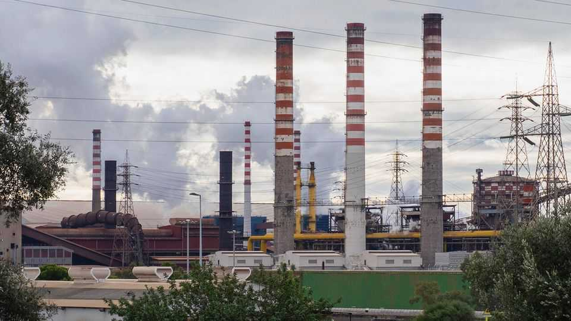

Europe’s biggest steelworks may be nearing its end
A court will soon decide whether Italy’s polluting Taranto plant must close

Oct 29th 2026
In the 1970s the steelworks at Taranto, on Italy’s southern coast, were among Europe’s largest, with 20,000 workers churning out millions of tonnes of steel a year. Today the plant is down to 8,000 employees, and this month it halted production. In July a court in Milan ordered it shut down by October 25th to install pollution controls. The owners appealed, and the government of Giorgia Meloni, Italy’s prime minister, allowed it to keep its furnaces warm so that production could resume. This week Italy’s highest court will decide whether they must be turned off, which could spell the plant’s end.
The steelworks’ chimneys tower over the city, spewing out toxins. In the nearby district of Tamburi residents sweep red dust from their balconies every day. Studies have documented elevated rates of cancer and respiratory disease, as well as reduced cognitive performance among children. One study found over 1,000 excess deaths between 2011-19 near the plant; another found deaths from lung cancer were 30% above the regional average.
Grazia Parisi, a local paediatrician, says she sees growing numbers of children with respiratory illnesses and conjunctivitis. Her patients include children with leukaemia and brain tumours. When children get a cough, mothers fear the worst. “We are afraid to breathe, eat or let our children play in the fields,” says Dr Parisi.
Among those suing the plant is Aurelio Rebuzzi, whose son Alessandro suffered from cystic fibrosis. He died at 16. In a church next to the plant, under a mosaic of Christ pointing at a steel factory, Mr Rebuzzi recalls doctors urging him to take his son away. “But Alessandro refused, saying ‘It’s not me that should leave my city that I love, but those who came and polluted it.’”
The government fears a shutdown would hurt Italian manufacturers and devastate Taranto’s economy. The plant was owned by the state when it opened in 1964. It was privatised in 1995, but has struggled to cope with international competition and with court penalties for pollution. The state has intervened repeatedly to indemnify the plant and bail it out.
In mid-October workers blocked roads to protest against the shutdown. Oronzo Spagnulo, a union organiser who has worked there for 26 years, said the government should make steelmaking cleaner while preserving jobs. His father, who also worked at the plant, died of brain cancer. The workers struggle to balance concern for their livelihoods with their health. Angelo Bicchieri, a safety officer, says residents who do not work at the factory see the workers as complicit: “They hate us.”
Ecco, an environmental think-tank, says the plant could switch from coal to natural gas and then green hydrogen at a cost of about €11bn ($12bn). But the workforce would shrink to 3,200. The government says European green-deal funds are available, and it hopes to find new private owners to fund the rest. But the shutdown order makes the plant less attractive.
Some residents reject even the clean-steel idea. They would prefer the region to stop making steel and shift to agriculture and tourism. Europe’s steel output has shrunk by one-third over the past two decades. If Taranto’s steelworks were to follow the trend, it might be no bad thing.■